ENGS149 Homework 6
Contents
Problem 1
Setup discrete system
close ALL HIDDEN n = 2; ll = 50; A_c = [0 1; -1 0]; B_c = [0;1]; C = [1 0]; D = 0; dt=0.2; [r,n] = size(C); [r,m] = size(D); mat_ss = ss(A_c,B_c,C,D); sys_dsct = c2d(mat_ss,dt); A_d = sys_dsct.A; B_d = sys_dsct.B; C_d = sys_dsct.C; D_d = sys_dsct.D;
Part 2
inp = randn(1,ll); x_0 = [1 0]; [Y,X] = dlsim(A_d,B_d,C_d,D_d,inp,x_0);
Using the acker function, we place the eigenvalues of A+GC at 0
G = acker(A_d',-C_d',[0 0])';
Here, I check G is working as expected by taking the norm of (A+GC)^2
norm((A_d+G*C)^2)
ans = 1.8310e-15
Part 3
Generate Markov Parameters, System and Observer
n = 2; N = 4; OMP = zeros(1,2*n+1);
From class, we define the observer Markov Parameters using the following equations.
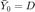
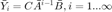
Where
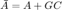
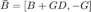
OMP(1) = D; for i=1:n OMP(2*i:2*i+1) = C_d*(A_d+G*C_d)^(i-1)*[B_d+G*D_d -G]; end
We compare this to the observer markov parameters calculated via the solution to the observer equation:

or equivalently,
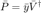
[Y_bar, V_bar] = YV_Form_nonzero(inp,Y',n);
The pinv2 function (attached) calculates the pseudoinverse using the SVD with a tolerance on the percentage of each individual singular value to the largest singular value
cap_y_hat = Y_bar'*pinv2(V_bar,1e-5);
The Normalized Singular Values of  for p=2
for p=2
figure s_v_d = svd(V_bar)'; s_v_d = s_v_d/max(s_v_d); plot(s_v_d,'-x') title('Normalized Singular Values of V_{bar}') ylabel('$\frac{\sigma_i}{\sigma_r}$','Interpreter','latex','FontSize',30) set(get(gca, 'YLabel'), 'Rotation', 0,'HorizontalAlignment','right') xlabel('$i$','Interpreter','latex','FontSize',20) axis([1 inf 0 inf]) xticks(1:1:length(s_v_d)) figure plot(abs(OMP-cap_y_hat)) title('Recovered Observer Markov Parameter Error') ylabel('$\bar{Y}_i$','Interpreter','latex','FontSize',20) xlabel('$i$','Interpreter','latex','FontSize',20) set(get(gca, 'YLabel'), 'Rotation', 0,'HorizontalAlignment','right') axis([1 inf 0 inf]) xticks(1:1:length(OMP))
 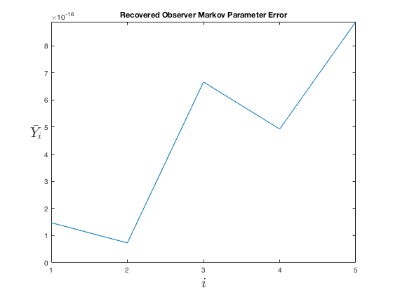
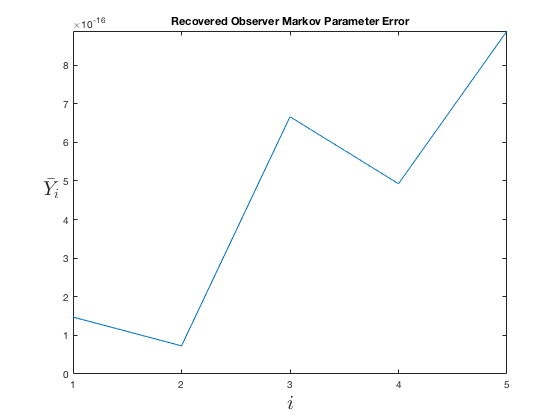 Part 4
Generate System Markov Parameters
n_mp = 5;
The system Markov Parameters are generated through the following equation:
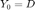
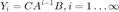
The first five Markov Parameters are
SMP = zeros(1,n+1); SMP(1) = D; for i=1:n_mp-1 SMP(i+1) = C_d*A_d^(i-1)*B_d; end SMP
SMP =
0 0.0199 0.0590 0.0957 0.1286
We can recover the System Markov Parameters using the function recover_SYSMP.
The function uses the following formula:
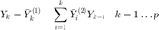
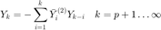
RSMP = recover_SYSMP(cap_y_hat,n_mp,r,m); SMP; figure plot(abs(SMP-RSMP)); axis([1 inf 0 inf]) xticks(1:1:length(SMP)) title('Recovered System Markov Parameter Error') ylabel('$Y_i$','Interpreter','latex','FontSize',20) xlabel('$i$','Interpreter','latex','FontSize',20) set(get(gca, 'YLabel'), 'Rotation', 0,'HorizontalAlignment','right')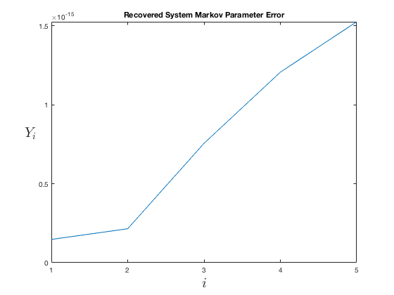
Part 5
We repeat parts 3 and 4 above with p=6
n = 6; N = 4; OMP = zeros(1,2*n+1); OMP(1) = D; for i=1:n OMP(2*i:2*i+1) = C_d*(A_d+G*C_d)^(i-1)*[B_d+G*D_d -G]; end [Y_bar, V_bar] = YV_Form_nonzero(inp,Y',n); cap_y_hat = Y_bar'*pinv2(V_bar,1e-5); figure s_v_d = svd(V_bar)'; s_v_d = s_v_d/max(s_v_d); plot(s_v_d,'-x') title('Normalized Singular Values of V_{bar}') ylabel('$\frac{\sigma_i}{\sigma_r}$','Interpreter','latex','FontSize',30) set(get(gca, 'YLabel'), 'Rotation', 0,'HorizontalAlignment','right') xlabel('$i$','Interpreter','latex','FontSize',20) axis([1 inf 0 inf]) xticks(1:1:length(s_v_d)) % Generate System Markov Parameters n_mp = 50; SMP = zeros(1,n+1); SMP(1) = D; for i=1:n_mp-1 SMP(i+1) = C_d*A_d^(i-1)*B_d; end RSMP = recover_SYSMP(cap_y_hat,n_mp,r,m); SMP; figure plot(abs(SMP-RSMP)); title('Recovered System Markov Parameter Error') ylabel('$Y_i$','Interpreter','latex','FontSize',20) xlabel('$i$','Interpreter','latex','FontSize',20) set(get(gca, 'YLabel'), 'Rotation', 0,'HorizontalAlignment','right') axis([1 inf 0 inf]) xticks(1:5:length(SMP))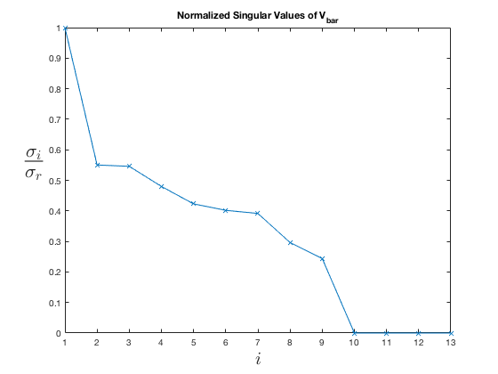 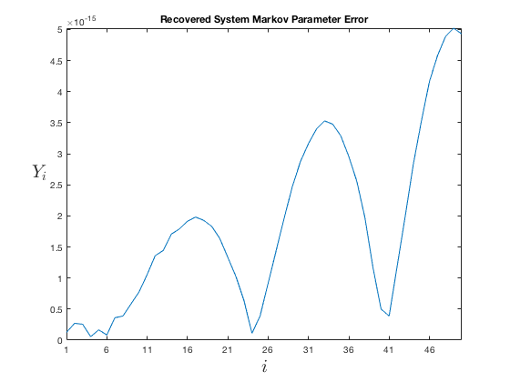
Part 6
Repeat 3 and 4, but measure velocity and position
n = 1; n_mp = 50; ll = 50; A_c = [0 1; -1 0]; B_c = [0;1]; C = [0 1;1 0]; D = [0;0]; dt=0.2; [r_outputs,n_states] = size(C); [r_outputs,m_inputs] = size(D); mat_ss = ss(A_c,B_c,C,D); sys_dsct = c2d(mat_ss,dt); A_d = sys_dsct.A; B_d = sys_dsct.B; C_d = sys_dsct.C; D_d = sys_dsct.D; G2 = place(A_d',-C_d',[0 0]); inp = randn(1,ll); x_0 = [1 0.5]; [Y, X] = dlsim(A_d,B_d,C_d,D_d,inp,x_0); [Y_bar, V_bar] = YV_Form_nonzero(inp,Y',n); cap_y_hat = Y_bar'*pinv2(V_bar,1e-8); figure s_v_d = svd(V_bar)'; s_v_d = s_v_d/max(s_v_d); plot(s_v_d,'-x') title('Normalized Singular Values of V_{bar}') ylabel('$\frac{\sigma_i}{\sigma_r}$','Interpreter','latex','FontSize',30) set(get(gca, 'YLabel'), 'Rotation', 0,'HorizontalAlignment','right') xlabel('$i$','Interpreter','latex','FontSize',20) axis([1 inf 0 inf]) xticks(1:1:length(s_v_d)) RSMP = recover_SYSMP(cap_y_hat,n_mp,r_outputs,m_inputs); SMP6 = zeros(2,n_mp); SMP6(:,1) = D_d; for i=1:n_mp-1 SMP6(:,i+1) = C_d*(A_d)^(i-1)*B_d; end OMP6 = zeros(2,3*n+1); OMP6(:,1) = D_d; for i=1:n OMP6(:,3*i-1:3*i+1) = C_d*(A_d+G2*C_d)^(i-1)*[B_d+G2*D_d -G2]; end figure plot(vecnorm(OMP6-cap_y_hat)); title('Recovered Observer Markov Parameter Error') ylabel('$\bar{Y}_i$','Interpreter','latex','FontSize',20) xlabel('$i$','Interpreter','latex','FontSize',20) set(get(gca, 'YLabel'), 'Rotation', 0,'HorizontalAlignment','right') axis([1 inf 0 inf]) xticks(1:1:length(OMP6)) figure plot(vecnorm(abs(SMP6-RSMP))); title('Recovered System Markov Parameter Error') ylabel('$Y_i$','Interpreter','latex','FontSize',20) xlabel('$i$','Interpreter','latex','FontSize',20) set(get(gca, 'YLabel'), 'Rotation', 0,'HorizontalAlignment','right') axis([1 inf 0 inf]) xticks(1:5:length(SMP))
 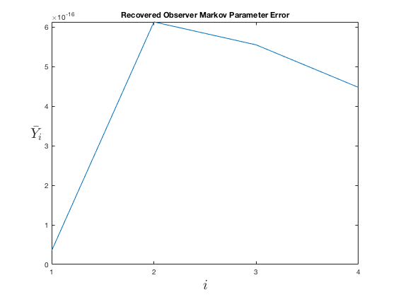 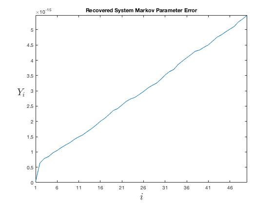
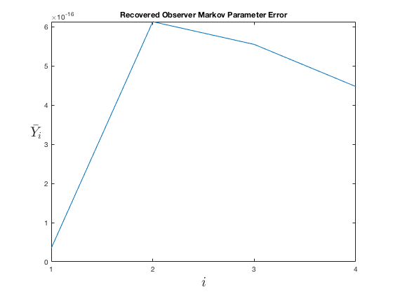 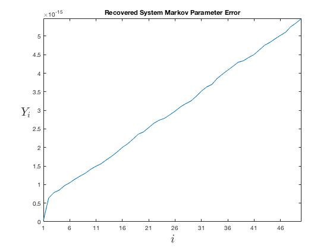 Part 7
Repeat for p=4
n = 6; ll = 50; A_c = [0 1; -1 0]; B_c = [0;1]; C = [1 0;0 1]; D = [0;0]; dt=0.2; [r,n] = size(C); [r,m] = size(D); mat_ss = ss(A_c,B_c,C,D); sys_dsct = c2d(mat_ss,dt); A_d = sys_dsct.A; B_d = sys_dsct.B; C_d = sys_dsct.C; D_d = sys_dsct.D; G2 = place(A_d',-C_d',[0 0]); inp = randn(1,ll); x_0 = [1 0]; [Y, X] = dlsim(A_d,B_d,C_d,D_d,inp,x_0); [Y_bar, V_bar] = YV_Form_nonzero(inp,Y',n); LM = 15; cap_y_hat = Y_bar'*pinv2(V_bar,1e-5); figure s_v_d = svd(V_bar)'; s_v_d = s_v_d/max(s_v_d); plot(s_v_d,'-x') title('Normalized Singular Values of V_{bar}') ylabel('$\frac{\sigma_i}{\sigma_r}$','Interpreter','latex','FontSize',30) set(get(gca, 'YLabel'), 'Rotation', 0,'HorizontalAlignment','right') xlabel('$i$','Interpreter','latex','FontSize',20) axis([1 inf 0 inf]) xticks(1:1:length(s_v_d)) cap_y_hat; RSMP = recover_SYSMP(cap_y_hat,n_mp,r,m); SMP6 = zeros(2,n_mp); SMP6(:,1) = D_d; for i=1:n_mp-1 SMP6(:,i+1) = C_d*(A_d)^(i-1)*B_d; end OMP6 = zeros(2,3*n+1); OMP6(:,1) = D_d; for i=1:n OMP6(:,3*i-1:3*i+1) = C_d*(A_d+G2*C_d)^(i-1)*[B_d+G2*D_d -G2]; end figure plot(vecnorm(SMP6-RSMP)); title('Recovered System Markov Parameter Error') ylabel('$Y_i$','Interpreter','latex','FontSize',20) xlabel('$i$','Interpreter','latex','FontSize',20) set(get(gca, 'YLabel'), 'Rotation', 0,'HorizontalAlignment','right') axis([1 inf 0 inf]) xticks(1:5:length(SMP))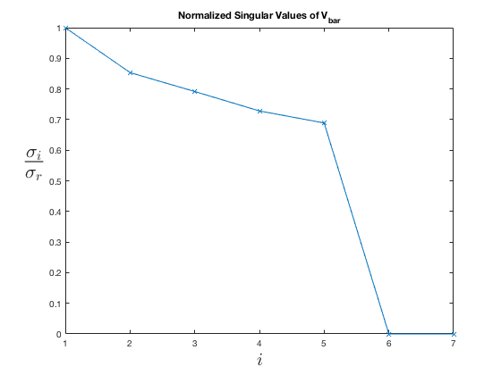 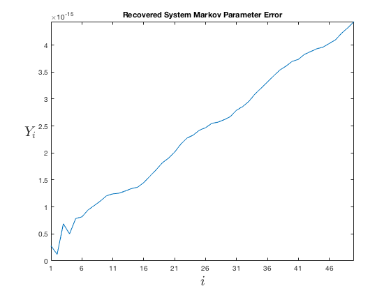